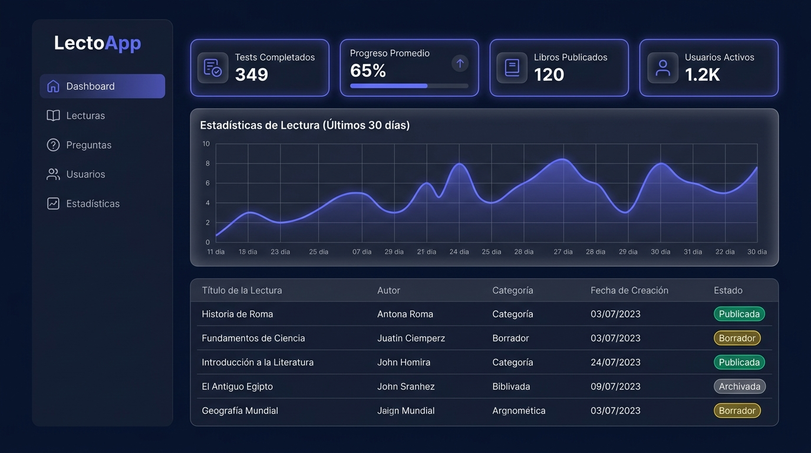
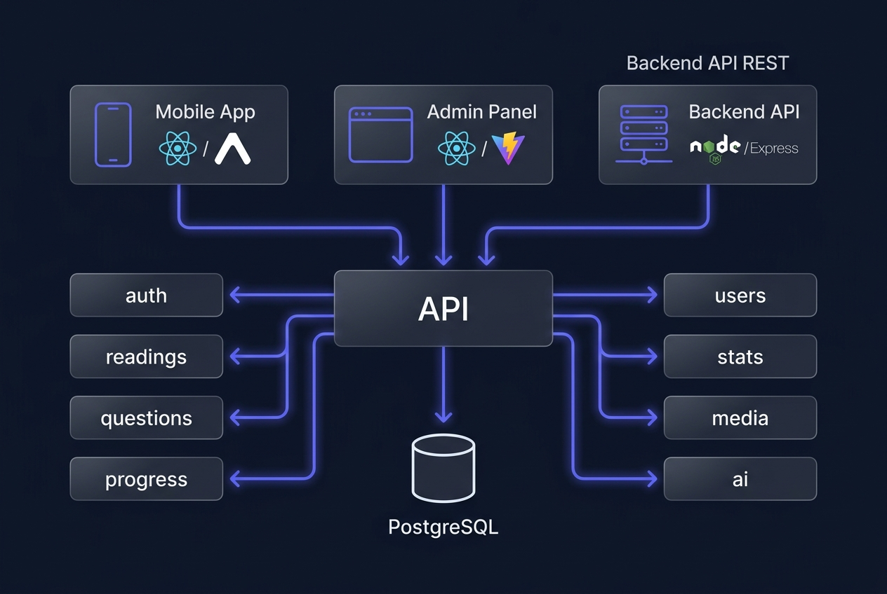

Sistema full-stack completo para Guatemala. Backend con TDD estricto, panel de administracion React y app movil React Native. Disenado para escalar a 50,000 estudiantes.
El contexto
El cliente lidera una estrategia nacional de comprension lectora. Despues de evaluar soluciones existentes, ninguna cumplia el requerimiento critico: autonomia editorial total.
Funcionalidad limitada, contenido cerrado, no interactivo. Imposible personalizar para el contexto guatemalteco.
Contenido culturalmente irrelevante. El cliente no puede subir sus propias lecturas sin depender de terceros.
CMS integrado con autonomia editorial total. El admin sube lecturas en <5 minutos, sin desarrolladores.
El cliente necesitaba gestionar contenido propio sin intermediarios tecnicos.
Guatemala requiere lecturas locales, actualizables en tiempo real por el equipo editorial.
Sin gamificacion, los estudiantes abandonan. LectoApp usa puntos, niveles y leaderboard para motivar.
La solucion
Arquitectura distribuida pensada para mantenibilidad y escala. Cada pieza puede desplegarse y escalarse de forma independiente.
Node.js 20 + Express + TypeScript estricto. 8 modulos independientes con patron Route→Validator→Controller→Service→Prisma.
SPA React 18 con Vite. El cliente gestiona todo el contenido de forma autonoma sin necesidad de soporte tecnico.
React Native + Expo, Android prioritario. Optimizada para dispositivos gama baja (2GB RAM, conectividad irregular).

Stack tecnico
Cada decision tecnica esta documentada con su razon de ser. Sin librerias sin justificacion, sin any en TypeScript.

Calidad del codigo
TDD estricto desde el primer modulo. Mutation testing para verificar que los tests detectan fallos reales, no solo dan cobertura.
Separacion clara de responsabilidades. Controllers solo parsean request. Toda la logica vive en Services.
deletedAt: DateTime?
Lecturas y usuarios no se borran fisicamente. Registros historicos preservados. Restauracion sin perdida de datos.
Cada uso del refresh token genera uno nuevo e invalida el anterior. Proteccion contra token theft y session hijacking.
Upload de media detras de una interfaz. Hoy: LocalDisk. Manana: GCS/S3 sin tocar controller ni service.
{ "success": true,
"data": {},
"error": null,
"meta": {"page":1,"total":100} }
Especificador → Codificador → Limpiador → Arquitecto → Hardener → QA. Desarrollo asistido por IA con roles definidos.
En accion
Admin crea una lectura → agrega preguntas → la publica → estudiante completa el reto y sube de nivel.
Progreso
PRD, arquitectura del sistema, modelo de datos, referencia de API, stack tecnologico, convenciones de codigo, pipeline de 6 agentes IA.
8 modulos (auth, readings, questions, users, progress, stats, media, ai). Auth con JWT + refresh token rotation + lockout. 211 tests, mutation testing.
SPA React con CRUD de lecturas y preguntas, dashboard con graficas, flujo editorial completo, preview del estudiante. 138 tests de componentes.
React Native + Expo. Mapa de aprendizaje, flujo de lectura y cuestionario, perfil del estudiante, navegacion completa.
Generacion automatica de preguntas con IA. Admin sube texto + nivel → IA genera cuestionario → revision editorial → publicacion.
Sistema de puntos, tienda de avatares, leaderboard nacional, notificaciones push, animaciones con Lottie.
Te interesa este proyecto?
El repositorio esta disponible para revision tecnica. Tambien puedo hablar sobre las decisiones de arquitectura, los patrones de TDD aplicados y el flujo de desarrollo con IA.